1004E10 engine, removed - remove cylinder head and oil sump for inspection - includes positioning on stand and removal
- Path
- Procedures > 10 ENGINE UNIT > 1004 ENGINE AND POWER UNIT > 1004E engine assembly inspection and repairs > 1004E10 engine, removed - remove cylinder head and oil sump for inspection - includes positioning on stand and removal
- Kind
- repair procedure (removal / refitting; the operation number is the code)
- Applies to
- all engines; all production periods
- Interactive page
- https://sloeber94.github.io/elrnDB-fMltpl/en/#/2892330
Applies to: engines: 1.6 16v; all production periods
1004D40 engine - position on stand and remove
1. Disconnect electrical connections (1a), (1b), (1c), (1d), (1e), (1f), (1g), (1h), (1i) and (1l).
2. Open the wiring duct (2a) and remove the engine wiring (2b).
 | Name | Connector |
|---|---|---|
1a | Integrated air temperature sensor |
| Name | Connector |
|---|---|---|
1b | Idle actuator |
| Name | Connector |
|---|---|---|
1c | Throttle position sensor |
| Name | Connector |
|---|---|---|
1d | Engine coolant temperature sensor |
| Name | Connector |
|---|---|---|
1e | Ignition coil |
| Name | Connector |
|---|---|---|
1f | Injector |
| Name | Connector |
|---|---|---|
1g | Alternator |
| Name | Connector |
|---|---|---|
1h | Brake fluid level sensor (switch) |
| Name | Connector |
|---|---|---|
1i | RPM sensor |
| Name | Connector |
|---|---|---|
1l | Detonation sensor |
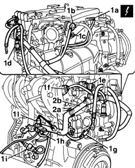
Applies to: engines: 1.6 16v; all production periods
1. Undo the belt plastic guard retaining bolts.
2. Remove the power steering pump belt guard.
3. Undo the securing nut (3a) and the adjustment screw (3b), thereby releasing the belt tension.
4. Undo the two bolts fixing the power assisted steering pump.
5. Remove the power assisted steering pump (5a), complete with mounting brackets, together with the drive belt (5b).
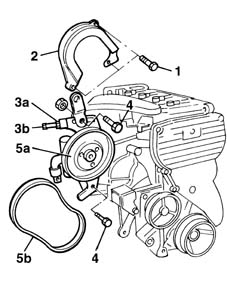
Applies to: engines: 1.6 16v; all production periods
1. Disconnect the supply connections for the spark plugs.
2. Undo the bolts fixing the ignition coils from the mounting bracket.
3. Remove the ignition coils, complete with spark plug high tension leads.
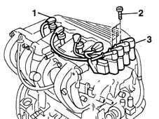
Applies to: engines: 1.6 16v; all production periods
1. Undo the bolts (1a) fixing the oil filler pipe and the bolt (1b) fixing the oil dipstick.
2. Disconnect the oil vapour inlet pipe.
3. Remove the engine oil filler pipe.
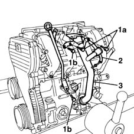
Applies to: engines: 1.6 16v; all production periods
1. Undo the fixing nuts (1a) and remove the protection (1b).
2. Disconnect the flexible engine coolant pipe from the rigid section fixed to the butterfly casing.
3. Undo the bolts fixing the air inlet casing to the inlet manifold.
4. Undo the bolts (4a) fixing the inlet casing to the camshaft housing, then remove the inlet casing (4b).
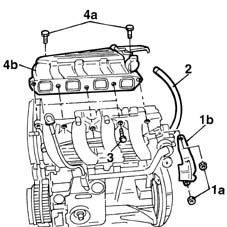
Applies to: engines: 1.6 16v; all production periods
1. Undo the fixing pins.
2. Remove the wiring duct.
3. Undo the fixing bolts (3a) and remove the inlet manifold (3b) together with the oil dipstick.
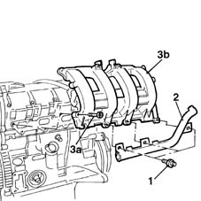
Applies to: engines: 1.6 16v; all production periods
1. Undo the bolts.
2. Remove the timing belt single shield.
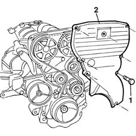
Applies to: engines: 1.6 16v; all production periods
1. Fit the engine flywheel retaining tool.
2. Undo the nut securing the crankshaft pulley.
3. Remove the crankshaft pulley.
 | Name | Country |
|---|---|---|
1 | Counter-torque | 1.860.846.000 |
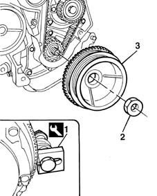
Applies to: engines: 1.6 16v; all production periods
1. Loosen the nut fixing the automatic belt tensioner.
2. Remove the timing drive belt.
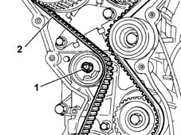
Applies to: engines: 1.6 16v; all production periods
1. Using the securing tools (1a), undo the bolts (1b) fixing the pullies.
2. Remove the inlet and exhaust camshaft drive pullies.
| Name | Country |
|---|---|---|
1a | Support for counter-torque | 1.860.831.000 |
| Name | Country |
|---|---|---|
1a | Adaptor | 1.860.885.000 |
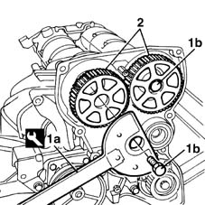
Applies to: engines: 1.6 16v; all production periods
1. Unscrew the retaining bolt.
2. Remove the fixed timing belt tensioner.
3. Undo the bolts (3a) and remove the timing belt rear protection (3b).
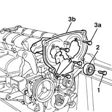
Applies to: engines: 1.6 16v; all production periods
1. Undo the fixing nuts (1a) and remove the mounting bracket (1b) for the ignition coils.
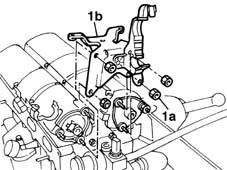
Applies to: engines: 1.6 16v; all production periods
1. Undo the bolts.
2. Remove the inlet side camshaft housing.
3. Recover the gasket underneath.
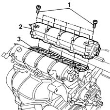
Applies to: engines: 1.6 16v; all production periods
1. Undo the bolts.
2. Remove the exhaust side camshaft housing.
3. Recover the gasket underneath.
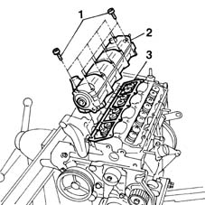
Applies to: engines: 1.6 16v; all production periods
1. Unscrew the retaining nuts.
2. Remove the exhaust manifold heat shield.
3. Unscrew the retaining nuts.
4. Remove the exhaust manifold, together with the power assisted steering pump mounting bracket.
Recover the exhaust manifold gasket.
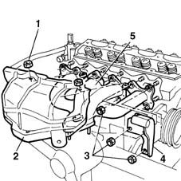
Applies to: engines: 1.6 16v; all production periods
1. Disconnect the coolant hose to the water pump rigid pipe.
2. Using an ordinary spanner, undo the bolts fixing the cylinder head to the cylinder block/crankcase.
3. Remove the cylinder head.
Recover the cylinder head gasket.
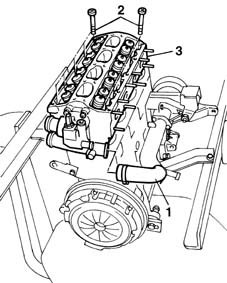
Applies to: engines: 1.6 16v; all production periods
1. Undo the bolts fixing the oil sump to the cylinder block/crankcase.
2. Using the tool, cut the silicon sealant along the entire perimeter of the oil sump.
| Name | Country |
|---|---|---|
2 | Blade | 1.870.718.000 |
3. Remove the crankcase sump.
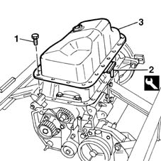
Applies to: engines: 1.9 JTD 8V; all production periods
1004D40 engine - position on stand and remove .
1. Undo the bolt (1a) and remove the fixed single drive pulley (1b).
2. Undo the bolts (2a) and remove the power unit reaction rod attachment bracket (2b).
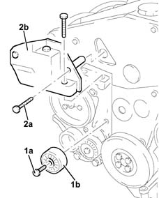
Applies to: engines: 1.9 JTD 8V; all production periods
1. Undo the bolts (1a) and remove the timing drive belt guard (1b).
2. Loosen the timing belt tensioner nut.
3. Remove the timing drive belt.
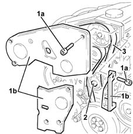
Applies to: engines: 1.9 JTD 8V; all production periods
Undo the bolts and remove the oil dip stick assembly.
1. Disconnect the pipes on the pressure regulator carrying diesel to the pressure pump.
2. Undo nuts (2a) and remove diesel delivery pressure regulator to pressure pump (2b).
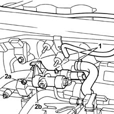
Applies to: engines: 1.9 JTD 8V; all production periods
1. Use general-purpose wrenches (1a) and (1b) without adjustment to unscrew manifold end fitting (1c) and pressure pump end fitting (1d).
2. Remove the pipe from the pressure pump to the fuel manifold.
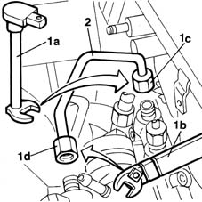
Applies to: engines: 1.9 JTD 8V; all production periods
1. Unscrew bolts (1a) securing power steering outlet pipe bracket, unscrew pipe fitting and remove the bracket together with pipe (1b).
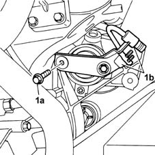
Applies to: engines: 1.9 JTD 8V; all production periods
1. Unscrew front side bolts (1a) and remove the mount together with pressure pump (1b).
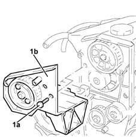
Applies to: engines: 1.9 JTD 8V; all production periods
1. Disconnect the oil vapour recovery pipe from the crankcase and cylinder head.
2. Disconnect the condensation oil recovery pipe from the crankcase sump.
3. Undo the nuts (3a) and remove the oil vapour separator assembly (3b) .
4. Remove the bracket.
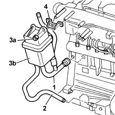
Applies to: engines: 1.9 JTD 8V; all production periods
1. Undo the bolts (1a) and remove heat shield (1b) from the turbocharger.
2. Undo the bolt securing exhaust gas recirculation pipe bracket (2a) and remove heat shield (2b).
3. Undo nuts (1a) and disconnect the exhaust gas recirculation pipe (1b) together with its gasket from the intake manifold.
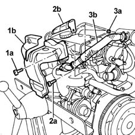
Applies to: engines: 1.9 JTD 8V; all production periods
1. Undo the nut securing the exhaust manifold bracket to the crankcase.
2. Undo the bolts (2a) and remove the protection for the oil return pipe to the sump from the turbocharger (2b).
3. Disconnect the oil return pipe to the sump from the turbocharger.
4. Disconnect the oil inlet pipe from the turbocharger.
5. Undo the bolts (5a) and remove coolant manifold (5b) and gasket (5c).
6. Undo the nuts (6a) and remove the exhaust manifold (6b) complete with turbocharger and E.G.R. valve.
7. Remove the gasket.
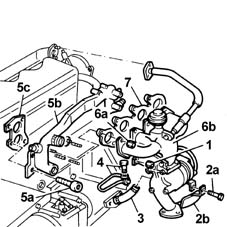
Applies to: engines: 1.9 JTD 8V; all production periods
1. Undo the bolts (1a) and remove cam cover (1b), complete with seal.
2. Unscrew bolts (2a) using tool (2b) and remove cylinder head assembly (2c).
| Name | Country |
|---|---|---|
2b | Hexagonal splined wrench | 1.852.154.000 |
3. Remove the cylinder head gasket.
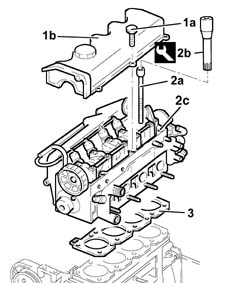
Applies to: engines: 1.9 JTD 8V; all production periods
Rotate the engine through 180° on the overhauling stand.
1. Undo the front and rear bolts (1a) for the crankcase sump using tool (1b).
| Name | Country |
|---|---|---|
1b | Key | 1.860.833.000 |
2. Undo the side bolts (2a) for the crankcase sump using tool (2b).
| Name | Country |
|---|---|---|
2b | Key | 1.860.834.000 |
3. Remove the crankcase sump (3a).
| Name | Country |
|---|---|---|
3b | Blade | 1.870.718.000 |
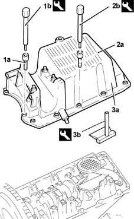
Topics linked from this page (11)
- 1004D40 engine - position on stand and remove
- A10 Alternator
- A30 Ignition coil
- K30 Brake fluid level sensor (switch)
- K43 Integrated air temperature sensor
- K45 Engine coolant temperature sensor
- K46 RPM sensor
- K50 Detonation sensor
- K56 Throttle position sensor
- N70 Injector
- N74 Idle actuator